Explore Jeddah
A Brief History
Jeddah served as the Red Sea gateway for Mecca pilgrims and Indian Ocean trade for centuries. Coral-stone houses with wooden roshan balconies in Al-Balad contrast with modern corniche development, recording Hejazi merchant architecture and contemporary Saudi urban growth. Corniche promenades and King Fahd Fountain extend Hejazi harbour life along the Red Sea shipping lanes.
Attractions Map
Top Sights & Activities
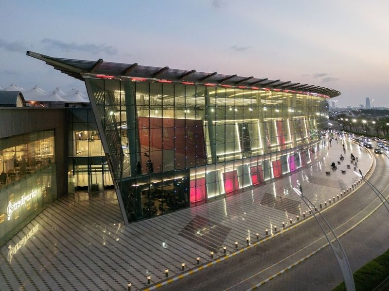
Cenomi Mall of Arabia
Cenomi Mall of Arabia is a massive 261,000 square meter shopping destination located near the King Abdulaziz International Airport in Jeddah. It boasts an impressive lineup of global fashion brands including Zara, Forever 21, Debenhams, DKNY, and Ted Baker. The mall also offers a variety of dining options ranging from fast food favorites like Burger King and Pizza Hut to fine restaurants such as Fridays and Smith & Wollensky.
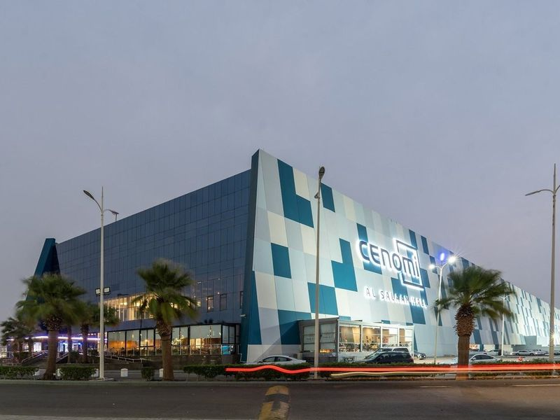
Cenomi Al Salaam Mall
Al Salaam Mall by Cenomi is a massive three-story indoor shopping center located on Prince Majid Road in Jeddah, Saudi Arabia. It offers a diverse range of local and international brands such as Mango, ALDO, Sephora, Swatch, Oud Milano, Damas Collections, Guess, Smashbox Cosmetics, Forever 21, Zara and Gap.
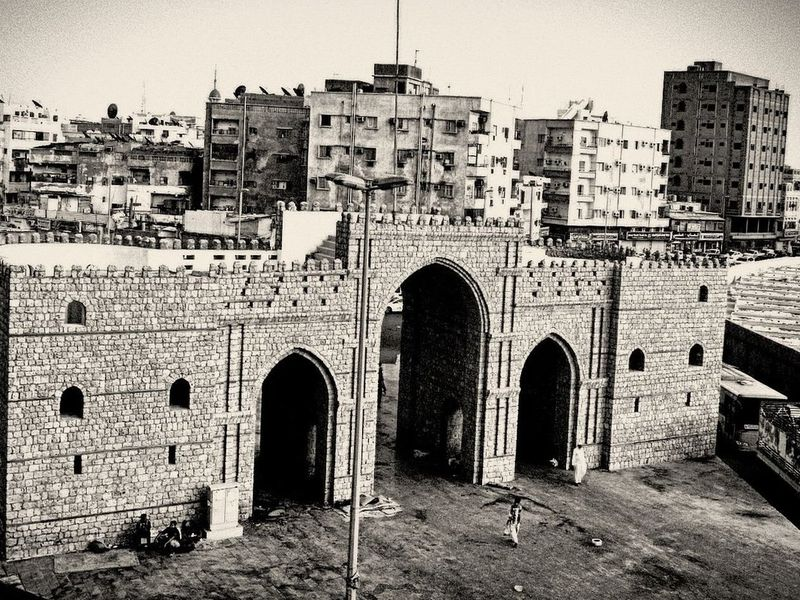
Bab Makkah
Bab Makkah, also known as the Makkah Gate, stands as a significant historical landmark in Jeddah, representing one of the eight gates of the ancient Jeddah Wall. Nestled in the heart of the historic district and adjacent to the Bedouin Souk, this gate serves as a entrance to bustling markets filled with traditional goods. After undergoing restoration, Bab Makkah has transformed into a lively shopping destination where visitors can find an array of local products.
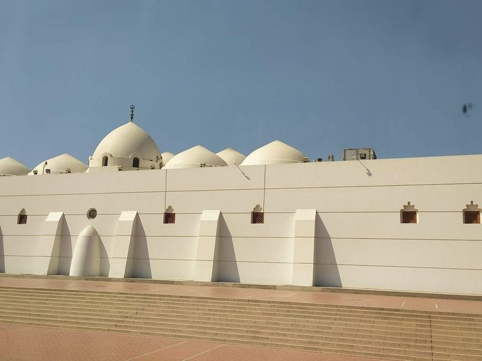
Jaffali Mosque
Nestled in the heart of Jeddah, the Jaffali Mosque, often referred to as the "white mosque," is a architectural gem that captivates visitors with its striking white façade and multiple small domes. The mosque features a unique three-tier minaret that adds to its grandeur. Surrounded by serene lake views, it offers a peaceful atmosphere perfect for reflection and prayer.
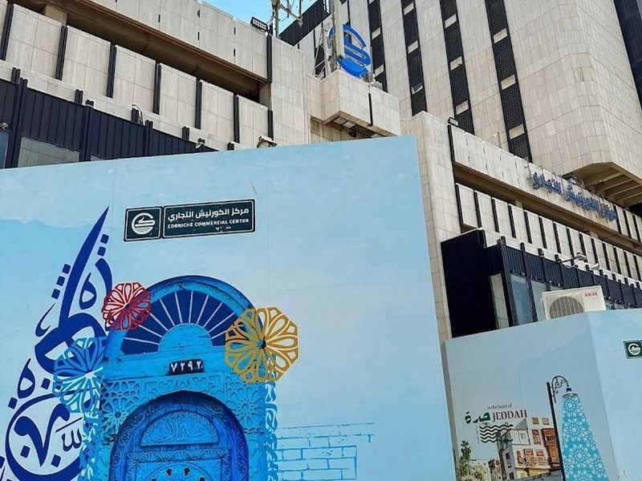
Corniche Commercial Center
Located in the charming waterfront neighborhood near downtown Jeddah, Corniche Commercial Center stands out as a unique shopping destination. Unlike most malls in the area, it offers a convenient city center location with 11 floors of diverse retail options. From international clothing and electronics retailers to local favorites selling jewelry and toys, the center caters to various shopping needs at affordable prices.
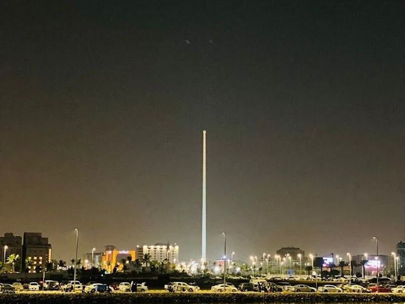
Jeddah Flagpole
Jeddah Flagpole is a remarkable landmark In King Abdullah Square, standing at an impressive height of 561 feet. This structure holds the Guinness World Records title for being the tallest unsupported flagpole globally and proudly hoists the official flag of Saudi Arabia. Erected in 2014, it is a prominent feature that can be seen from various tourist attractions in Jeddah. The pole tapers from its base to the top, with a diameter ranging from 4.
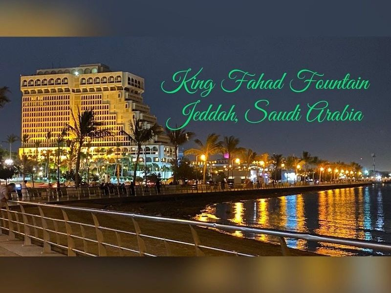
King Fahad's Fountain
King Fahad's Fountain, also known as the Jeddah Fountain, is a must-visit attraction located in Jeddah, Saudi Arabia. It holds the title of being the world's tallest water fountain and can be seen from various parts of the city. Donated by King Fahd, it was constructed between 1980 and 1983 and launched in 1985.
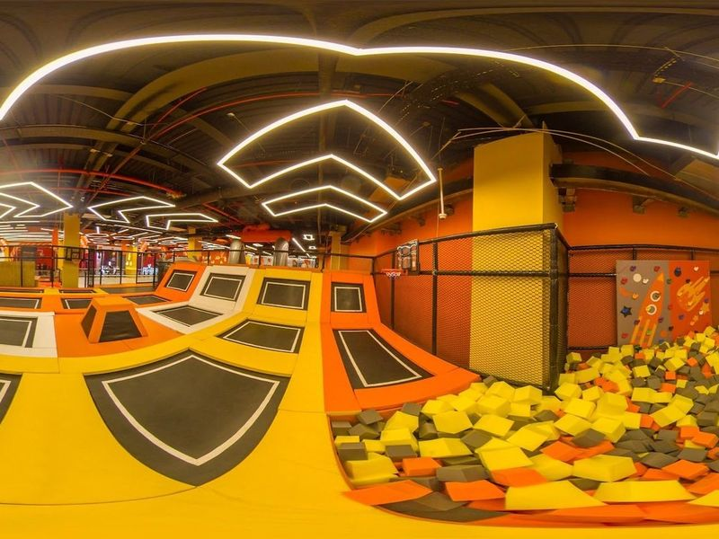
فنكي منكي
Cenomi Haifaa Mall is a shopping destination in Jeddah, offering a diverse range of international brands, an indoor amusement park, and a food court. It's the perfect choice for families with kids as it provides entertainment options alongside luxury shopping experiences. The mall houses stores featuring luxury brands like Berksha, F&F, Mango, Damas, and Swatch. Additionally, visitors can enjoy exclusive dining experiences within the mall premises.
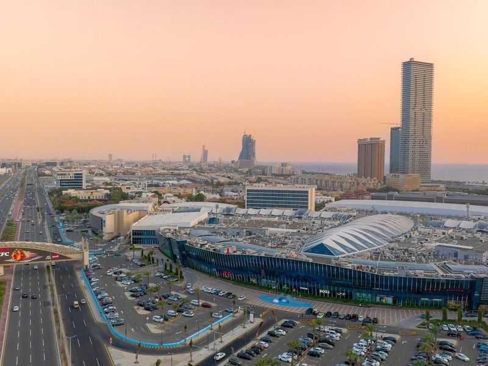
Red Sea Mall
Red Sea Mall in Jeddah is a retail hub offering a unique shopping experience, casual dining options, a cinema, and a fun center with bowling and billiards. This mall is not just about shopping; it also provides a historical encounter with its dedicated section showcasing the country's proud heritage and culture. The traditional decor and paintings of historical figures add to the cultural attraction of the mall.
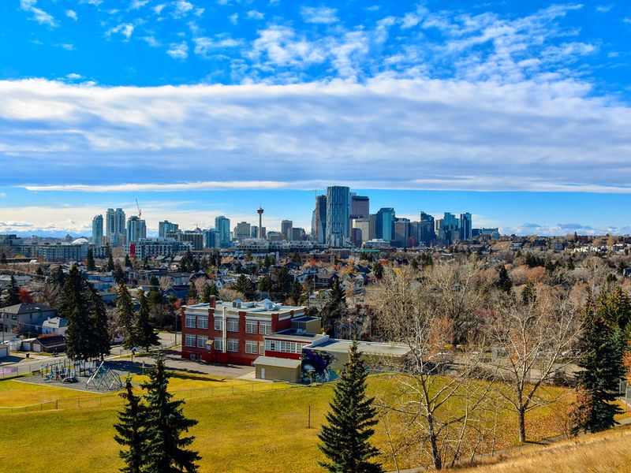
City Walk
City Walk is listed among principal sites for Jeddah within Saudi Arabia. Municipal and regional heritage listings document its place in the historic centre and travellers routes through Jeddah. City Walk is listed among principal sites for Jeddah within Saudi Arabia.
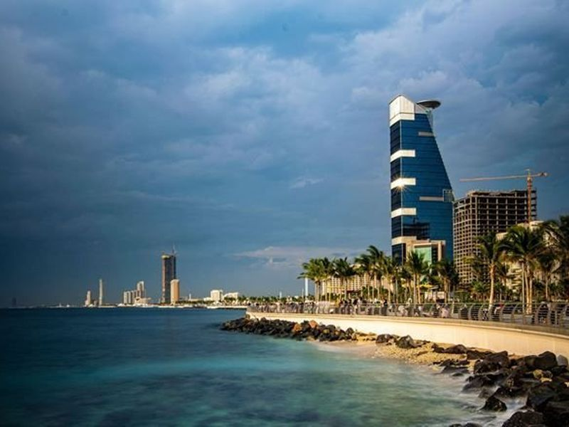
ROSHN Waterfront - واجهة روشن البحرية
ROSHN Waterfront, or واجهة روشن البحرية, is a destination along the Red Sea that has quickly become a favorite for both walkers and cyclists. Known for its sunset views, this waterfront offers an array of events and dining options, making it a lively spot to explore. With open beach areas still in development, it's perfect for early morning jogs or evening picnics. Families will appreciate the kid-friendly zones, including a mini water park.

Al Lulu Plaza
Al Lulu Plaza is listed among principal sites for Jeddah within Saudi Arabia. Municipal and regional heritage listings document its place in the historic centre and travellers routes through Jeddah. Al Lulu Plaza is listed among principal sites for Jeddah within Saudi Arabia.
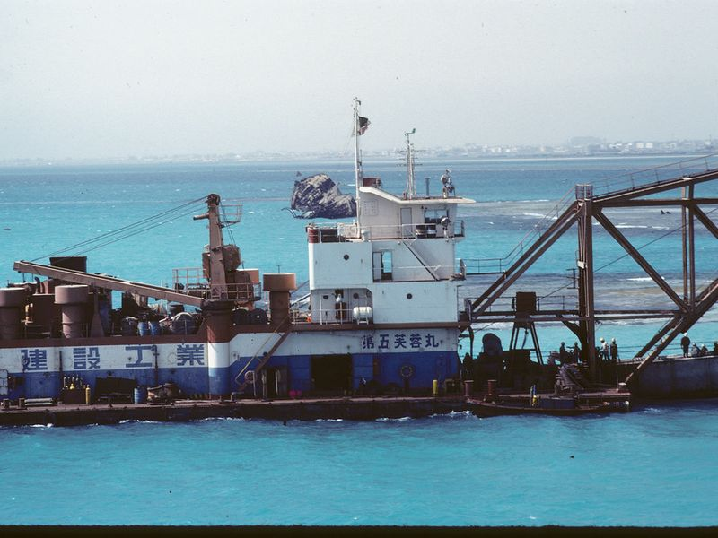
Jeddah Waterfront Harbor
Jeddah Waterfront Harbor is listed among principal sites for Jeddah within Saudi Arabia. Municipal and regional heritage listings document its place in the historic centre and travellers routes through Jeddah. Jeddah Waterfront Harbor is listed among principal sites for Jeddah within Saudi Arabia.
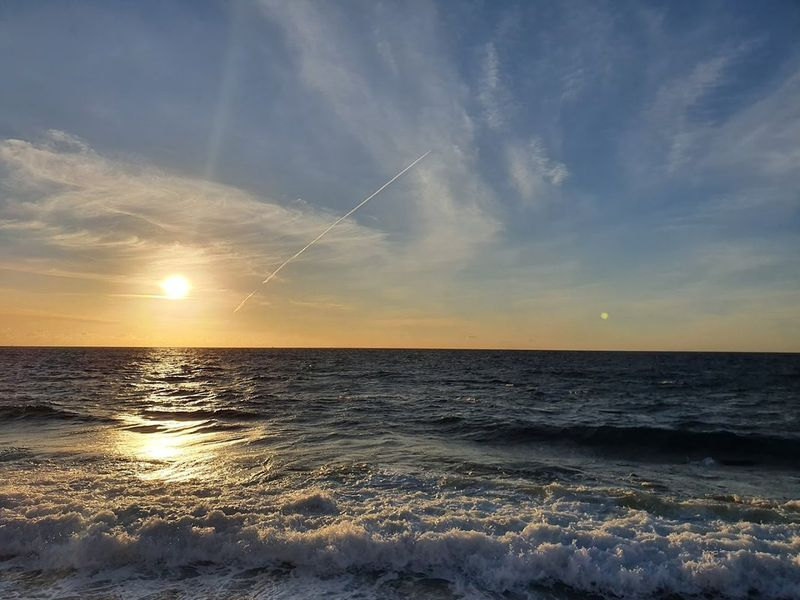
Jeddah Water Front
Jeddah Water Front is listed among principal sites for Jeddah within Saudi Arabia. Municipal and regional heritage listings document its place in the historic centre and travellers routes through Jeddah. Jeddah Water Front is listed among principal sites for Jeddah within Saudi Arabia.
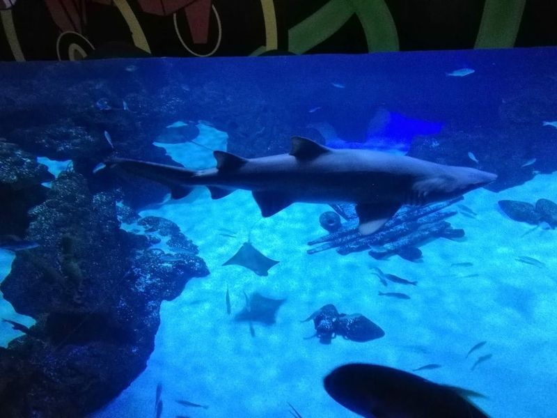
Fakieh Aquarium
Fakieh Aquarium is a must-visit destination for those seeking an immersive experience with marine life. Located in Jeddah, Saudi Arabia, it is the only public aquarium in the country and boasts over 200 species of sea creatures from the Red Sea. Visitors can marvel at sharks, groupers, string rays, napoleon wrasse, sea horses, green turtles, and more. The aquarium plans to expand its collection to include even more fascinating underwater residents like the sea dragon.
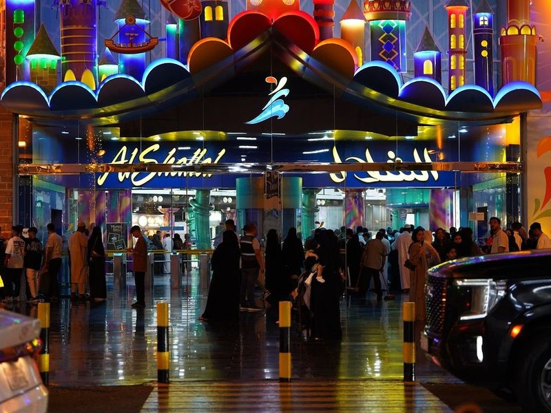
Al Shallal Theme Park
Al Shallal Theme Park in Jeddah is a must-visit destination for families and thrill-seekers. This popular amusement park includes attractions, including roller coasters, educational boat rides, and gravity-defying experiences like zero gravity. The lively vibes and joyfulness make it a top choice for tourists visiting Saudi Arabia.